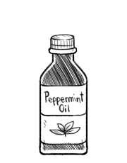

peppermint oil
Peppermint oil is made from peppermint leaves, obtained by extracting the oils from dried or fresh leaves and the flowering tops of the plant using alcohol. It has a high concentration of natural pesticides, known to repel pest insects.
Peppermint oil and leaves have a cooling effect when used topically for muscle pain, nerve pain, relief from itching, or as a fragrance. Peppermint oil is a stronger ingredient than peppermint extract, often used in candy-making.
peppermint
Peppermint, or Mentha balsamea, is a hybrid mint, a cross between watermint and spearmint. Peppermint is an essential ingredient in candies, chewing gum, toothpaste, candles, extracts and compounds. Fresh leaves are preferable over dried. Harvesting of mint leaves can be done at any time. Fresh leaves should be used immediately or stored up to a few days in plastic bags in a refrigerator. Optionally, leaves can be frozen in ice cube trays. Dried mint leaves should be stored in an airtight container placed in a cool, dark, dry area.